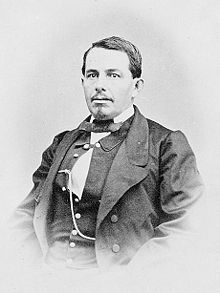

Héroes de la batalla de puebla
Ignacio Zaragozanació en el poblado de Bahía del Espíritu Santo, en el estado de Coahuila y Texas, hoy Goliad. Fue el segundo hijo de Miguel Zaragoza Valdés, de Veracruz, y María de Jesús Seguin Martínez, de San Antonio de Béxar, esta última pariente de Juan José Erasmo Seguin. Cuando los rebeldes texanos, apoyados por los Estados Unidos de América, ganaron la Guerra de independencia de Texas, Miguel Zaragoza, que era soldado de infantería, se mudó con su familia desde la ciudad Presidio de La Bahía de Espíritu Santo (hoy Goliad, Texas), donde había nacido su hijo Ignacio, a la ciudad de Matamoros en 1834, y posteriormente, en 1844, a la ciudad de Monterrey, donde Ignacio entró al seminario, estudios que abandonó en 1846, convencido de que no tenía vocación sacerdotal.
Nepomuceno Almonte
Entre 1822-1824, Almonte forma parte del cuadro de ayudantes del líder Trespalacios en Texas cuando es enviado a Londres acompañando al embajador José Mariano Michelena. Las negociaciones con los británicos formalizan un acuerdo comercial y de amistad que conducen al primer tratado internacional de la historia mexicana. Fue embajador de México en EE.UU. en la década de los años 1850.
En 1839 con el grado de general brigadier -el mismo que alcanzó en la guerra a los doce años- es enviado extraordinario en Bélgica; pero el Presidente Anastasio Bustamante lo hace regresar al país como Ministro de Guerra y Marina de México; cargo que ocupa hasta 1841. Crea la infantería ligera y la comisión de estadística militar. Cuando se firman las Bases de Tacubaya se niega a salir desterrado, por lo que es confinado a un cuartel de Tehuacán. Aquí establece el alumbrado público y un gabinete de lectura.
En 1842 actúa como representante de México ante los Estados Unidos de Norteamérica. Además de un excelente inglés, domina el francés, lengua de la diplomacia universal. El embajador Almonte no permite que los Estados Unidos intervengan en el asunto de Texas; pero al aprobar estos su anexión, pide de inmediato sus pasaportes y vuelve a México. El General Paredes, triunfante en la revolución de La Ciudadela, lo designa ministro de Guerra y Marina del 5 de enero al 20 de febrero de 1846. Partidario de la guerra contra Estados Unidos, vuelve a ocupar el ministerio de Guerra del 28 de agosto al 23 de diciembre de 1846. Organiza las guardias nacionales y procura auxiliar a Veracruz, bloqueada por los estadounidenses, en septiembre de 1846.
Fue Ministro de Hacienda por breves días -del 11 al 22 de diciembre-, rehúsa firmar la Ley de Manos Muertas que expropia los bienes de la Iglesia, por sentirla como un ataque a la inmensa mayoría católica en esos momentos y propiciar la división. En cambio, ve con dolor a su país mutilado a consecuencia de los Tratado de Guadalupe Hidalgo, firmados por los liberales con los diplomáticos estadounidenses el cual cedía gran parte del territorio nacional a los estadounidenses al marcar nuevos límites de frontera entre un país y otro.
Porfirio Díaz
Porfirio Díaz nació en Oaxaca, en la antes provincia de Antequera, la noche del 15 de septiembre de 1830 y fue bautizado por su padrino José Agustín Domínguez ese mismo día. Era el sexto de siete hijos, concebidos en el matrimonio de José Faustino Díaz Orozco y María Petrona Cecilia Mori Cortés, quienes se casaron en 1808, cuando el padre de Díaz manejaba los negocios de una empresa de minas y metales de Cinco Señores, San José y El Socorro, en el distrito de Ixtlán. Poco tiempo después, José Faustino se enroló en el ejército insurgente de Vicente Guerrero, donde fungió como veterinario, y, tras un tiempo, fue nombrado coronel. En 1819, tras once años de matrimonio, la pareja concibió a su primera hija, Desideria. Dos años después nacieron los gemelos Cayetano y Pablo, quienes murieron en la infancia; luego vino el nacimiento de dos mujeres más, Manuela y Nicolasa. En 1830 nació Porfirio, y en 1833, el hermano menor, Felipe Díaz Mori.
María Petrona Mori, madre de Porfirio Díaz, en una fotografía realizada hacia 1854 en Oaxaca.
En 1820, los Díaz se establecieron en el centro de la ciudad de Oaxaca, donde compraron un mesón frente al templo de la Virgen de la Soledad, que alojaba a los viajeros que llegaban a la ciudad a comerciar. En este tiempo, José Faustino Díaz montó un negocio dedicado a la herrería, lo que le produjo ganancias que hicieron que su familia tuviera una situación económica holgada durante algunos años.

Miguel Negrete
Durante la Segunda Intervención Francesa en México, Negrete hizo a un lado su ideología conservadora y participó en la defensa del territorio mexicano, ante el avance de las tropas francesas hacia el centro de México, Negrete reacciona y se pone de parte del bando liberal con su célebre frase "Yo tengo Patria antes que Partido".
Unido al ejército republicano y a las órdenes del general Ignacio Zaragoza, ambos se cubren de gloria en la Batalla de Las Cumbres y en la Batalla de Puebla el 5 de mayo de 1862, llegando a ser considerado como el segundo héroe de dicha batalla al defender el Fuerte de Loreto, al respecto Ernesto de la Torre comenta.



 1
1 2
2 3
3 4
4 5
5 8
8 9
9